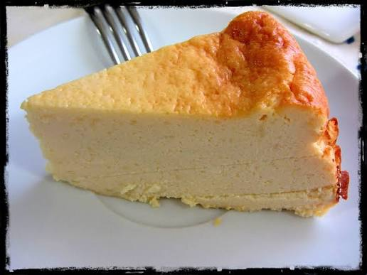

Tarta de queso sin horno

La tarta de queso sin horno es una alternativa sencilla al clásico cheesecake horneado. Su textura cremosa y suave, combinada con una base crujiente de galletas, la convierte en un postre perfecto para disfrutar frío. Una de sus principales ventajas es que no necesitas utilizar el horno, por lo que es una excelente opción para quienes buscan preparar un postre fácil y sin complicaciones. Además, puedes acompañarla con mermelada, frutas frescas, chocolate o cualquier otra cobertura que te guste.